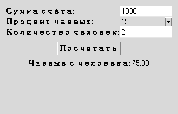

Глава 16 · Создаём классные приложения с Tkinter
Tip Calculator Pro: финальная версия
Тот же проект, что и в разделе 16.8 — но теперь со всем, что мы изучили после него.
Вернёмся к калькулятору чаевых (раздел 16.8) и соберём в нём всё, что изучили в этой главе — по стадиям, а не одним огромным финальным куском кода.
Путь от фундамента до Pro
V1–V2 (16.8)
Entry + Button + grid()
чистая формула чаевых
V3
Combobox с типовыми процентами вместо Entry
V4
поле «количество человек» — делим чаевые
V5
validate_positive_amount/validate_positive_int (16.23)
V6
меню «Файл» с пунктом «Выход» (16.6)
V7
load_settings/save_settings — запоминаем последний процент (16.25)
V8
класс TipCalculatorApp — всё внутри одного объекта (16.25)
Настройки сохраняются относительно текущей рабочей директории
SETTINGS_PATH = Path("tip_calculator_settings.json") — относительный путь: файл появится там, откуда запущена программа (глава 15, раздел 15.7 про CWD). Для учебного проекта это осознанный, явный выбор — не забытая неопределённость. В реальном распространяемом приложении для этого обычно выбирают выделенную папку данных приложения; здесь это намеренно оставлено простым.tip_calculator_pro.py
import json
import tkinter as tk
from tkinter import ttk
from pathlib import Path
SETTINGS_PATH = Path("tip_calculator_settings.json")
DEFAULT_SETTINGS = {"last_percent": "15"}
def load_settings():
if not SETTINGS_PATH.exists():
return dict(DEFAULT_SETTINGS)
with SETTINGS_PATH.open("r", encoding="utf-8") as f:
return json.load(f)
def save_settings(settings):
with SETTINGS_PATH.open("w", encoding="utf-8") as f:
json.dump(settings, f, ensure_ascii=False, indent=2)
def parse_number(text):
text = text.strip()
if not text:
return False, None, "Поле не должно быть пустым"
try:
return True, float(text), ""
except ValueError:
return False, None, "Введите число"
def validate_positive_amount(text):
ok, value, message = parse_number(text)
if not ok:
return False, message
if value <= 0:
return False, "Число должно быть больше нуля"
return True, ""
def validate_positive_int(text):
ok, value, message = parse_number(text)
if not ok:
return False, message
if value != int(value):
return False, "Введите целое число"
if int(value) < 1:
return False, "Число должно быть не меньше 1"
return True, ""
def calculate_tip(amount, percent, people):
return (amount * percent / 100) / people
class TipCalculatorApp:
def __init__(self, root):
self.root = root
self.root.title("Tip Calculator Pro")
self.settings = load_settings()
self.amount_var = tk.StringVar()
self.percent_var = tk.StringVar(value=self.settings["last_percent"])
self.people_var = tk.StringVar(value="1")
self.result_var = tk.StringVar()
self.build_ui()
self.root.protocol("WM_DELETE_WINDOW", self.on_close)
def build_ui(self):
frame = ttk.Frame(self.root, padding=12)
frame.grid(row=0, column=0, sticky="nsew")
self.root.columnconfigure(0, weight=1)
ttk.Label(frame, text="Сумма счёта:").grid(row=0, column=0, sticky="w")
ttk.Entry(frame, textvariable=self.amount_var).grid(row=0, column=1, sticky="ew")
ttk.Label(frame, text="Процент чаевых:").grid(row=1, column=0, sticky="w")
ttk.Combobox(frame, textvariable=self.percent_var, values=["10", "15", "20"],
state="readonly").grid(row=1, column=1, sticky="ew")
ttk.Label(frame, text="Количество человек:").grid(row=2, column=0, sticky="w")
ttk.Entry(frame, textvariable=self.people_var).grid(row=2, column=1, sticky="ew")
ttk.Button(frame, text="Посчитать", command=self.on_calculate).grid(
row=3, column=0, columnspan=2, pady=8)
ttk.Label(frame, textvariable=self.result_var).grid(row=4, column=0, columnspan=2)
frame.columnconfigure(1, weight=1)
def on_calculate(self):
ok, message = validate_positive_amount(self.amount_var.get())
if not ok:
self.result_var.set(message)
return
ok_people, message_people = validate_positive_int(self.people_var.get())
if not ok_people:
self.result_var.set("Количество человек: " + message_people)
return
chaevye = calculate_tip(
float(self.amount_var.get()),
float(self.percent_var.get()),
int(self.people_var.get()),
)
self.result_var.set(f"Чаевые с человека: {chaevye:.2f}")
self.settings["last_percent"] = self.percent_var.get()
def on_close(self):
save_settings(self.settings)
self.root.destroy()
root = tk.Tk()
app = TipCalculatorApp(root)
root.mainloop()Количество человек — положительное целое, не любое число
2.5 человека не бывает.
validate_positive_int (раздел 16.23) принимает 1, 2, 5, 10 — и отвергает 0, -1, 2.5, "abc" и пустую строку с понятным сообщением об ошибке.
Практика: Tip Calculator Pro
Модуль tkinter открывает нативное окно Python — выполните локально в VS Code, PyCharm или Jupyter
Практика выполняется локально